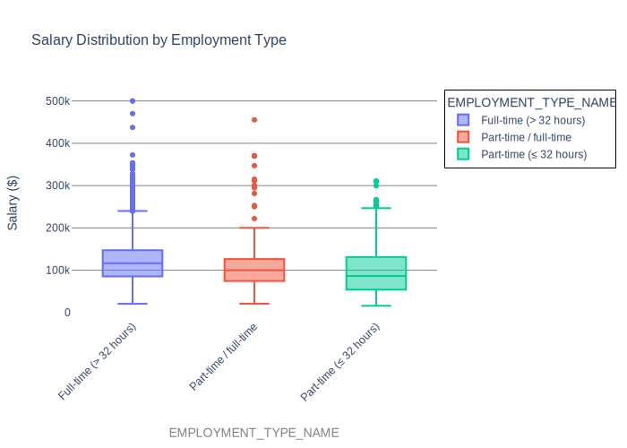
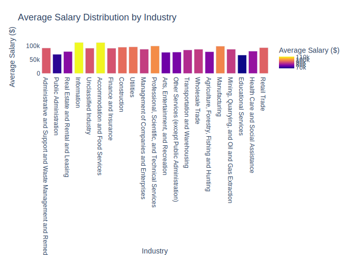
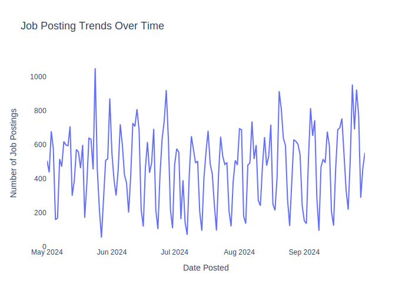
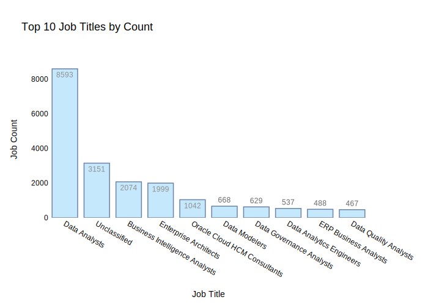
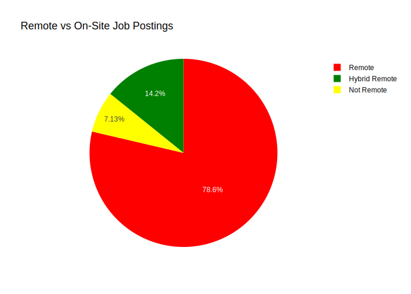
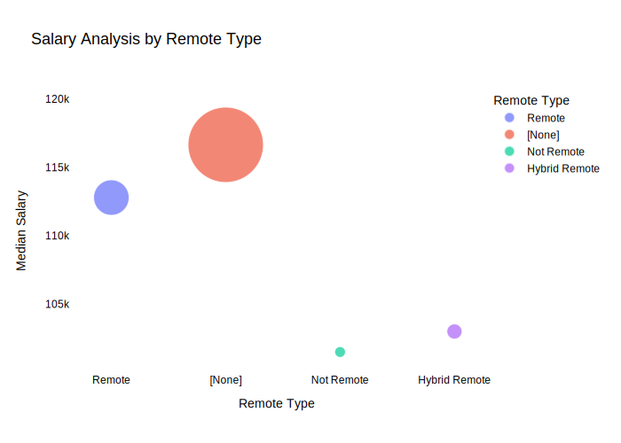

Lightcast Job Postings Analysis
Analysis Objectives
- Load and analyze the 2024 Lightcast dataset in Spark DataFrame.
- Create visualizations using Plotly.
- Explore salary distributions, employment trends, and job postings.
- Analyze skills in relation to NAICS/SOC/ONET codes and salaries.
- Customize colors, fonts, and styles in all visualizations.
Salary Distribution by Employment Type
- Goal: Identify salary trends across different employment types.

This box plot reveals the distribution of salaries across three different employment types: full-time (> 32 hours), part-time/full-time, and part-time (≤ 32 hours). It shows that full-time positions generally offer higher median salaries and a wider range of salary values compared to part-time roles, which display more compact salary distributions and lower overall salary ranges.
Salary Distribution by Industry
- Goal: Compare salary variations across industries.

This graph illustrates the average salary distribution across various industries like Information and Accommodation tend to offer higher average salaries. Sectors Public Administration and Educational Services have lower average salaries.
Job Posting Trends Over Time
- Goal: Analyze how job postings fluctuate over time.

This line chart shows the fluctuations in the number of job postings in 2024 between May and September, indicating a highly variable job market with peaks that suggest seasonal or periodic changes in job availability. The most significant spikes and drops highlight periods of either increased hiring activity or possible data collection anomalies, emphasizing the need for further analysis to understand these patterns better.
Top 10 Job Titles by Count
- Goal: Identify the most frequently posted job titles.

This bar chart reveals the top 10 job titles by count, indicating that Data Analyst is the most frequently posted job title by a significant margin. This might underscore the critical importance of data skills in the current job market.
Remote vs On-Site Job Postings
- Goal: Compare the proportion of remote and on-site job postings.

This pie chart shows that a vast majority of job postings (78.6%), are remote positions. Non-remote and hybrid remote job postings represent a smaller fraction, with non-remote jobs accounting for 7.13% and hybrid remote jobs making up 14.2%.
Salary Analysis by ONET Occupation Type (Bubble Chart)
- Goal: Analyze how salaries differ across ONET occupation types.

This bubble chart displays the ONET occupation of Business Intelligence Analysts, revealing a median salary of $116,300. The size of the bubble indicates 72476 job postings, highlighting the significant demand for this role in the job market.
Salary by Education Level
Bachelor’s or Lower
The scatter plot shows the relationship between maximum years of experience and average salary for employees with a bachelor’s degree or less. We can observe a wide range of salaries for different experience levels, indicating that salary levels in this group can be significantly influenced by factors other than experience. Notably, several occupations cluster around certain salary ranges regardless of experience, suggesting that there are industry-specific salary norms.
The histogram for the level of bachelor’s degree or lower shows a distinct spike around the $100,000 mark, indicating the overall average salary in this group. The presence of a small number of outliers exceeding 300 thousand indicates that exceptionally high salaries in this educational group are rare.
Master’s or PhD
For those with a master’s or PhD, the scatter plot shows that educational level does not necessarily correlate with higher starting salaries, as can be seen by the concentration of data points below the 100k salary mark in different years of experience. However, there is a pattern where salary generally increases with experience, though with less variability compared to those with a bachelor’s degree or lower.
The histogram for people with a master’s or PhD shows a more even range of salaries, with a notable peak just above $100,000. This suggests that while higher education can lead to higher earning potential, the salary spread is wider, showing the diversity of roles and industries that people with higher education can perform.
Salary by Remote Work Type
Remote Analysis
This scatter plot shows the average salary of remote workers with different lengths of service. It demonstrates a wide range of salary levels, with some salary ranges clustered around specific roles, suggesting that remote working opportunities can offer competitive salaries for a variety of positions. A notable finding is that salary does not show a consistent increase with increasing experience, suggesting that other factors may also play an important role.
The histogram for remote workers shows a pronounced peak around the 100k mark, indicating the overall salary level among remote positions. The distribution is quite narrow, suggesting that most remote positions are centered around this salary level, with few offering significantly higher salaries.
Hybrid Analysis
The scatter plot illustrates the distribution of salaries for employees in hybrid roles based on experience. Unlike fully remote positions, hybrid roles show a more even distribution of salaries across experience levels, with less concentration at the lower end of the salary range, suggesting potentially better career progression.
The histogram for hybrid workers shows a major concentration of salaries between 50k and 100k, with a sharp peak around 100k. This suggests that while hybrid roles are often found in this salary range, there is less variation in compensation compared to fully remote positions.
Onsite Analysis
The scatter plot for on-site workers shows a rich clustering of salaries for different experience levels, suggesting that on-site jobs offer a wider range of salaries than remote and hybrid positions. The distribution shows no clear correlation between years of experience and salary level, suggesting that on-site salaries may be more dependent on job specifics or other factors.
The graph shows that mostly all employees work in the neighborhood of $100,000, like remote employees, but there are some higher salaries. The presence of salaries in a wider range confirms the variety of compensation that onsite roles can offer.